路线 C：v0 经典机身 + SG90 舵机（性价比之手）
Stack-chan 最经典、最便宜的自制路线：v0 官方外壳 + 两颗 SG90 PWM 舵机 + M5Stack Core（Basic/Gray）或 Core2。 含两个省钱变体：C1 直插（零 PCB，杜邦线直插）和 M5GO Bottom 版（mongonta 方案）。 预算约 ¥300–500（含主机；已有主机 + 丐版直插只要 +¥30），工期 1 个周末。

0. 本路线一览
| 项 | 内容 |
|---|---|
| 主机 | M5Stack Core Basic / Gray（最便宜）或 Core2（带电池喇叭） |
| 舵机 | SG90 ×2（¥5–15/个）；推荐 MG90S 金属齿 |
| 驱动方式 | PWM（丐版直插免底板；或官方底板 PWM 模式） |
| 打印件 | stl/v0-sg90/（5 件） |
| 固件构建 | 通用 m5stack（Core）或 m5stack_core2（Core2），显式 PWM 配置 |
| 参考角（正前） | 90°起测，动作范围按驱动限位及实际机构验证 |
| 难度 | ★★★（打板装壳）/ ★（丐版直插） |
为什么选它：主机便宜（Core Basic 二手/闲鱼更便宜）、舵机白菜价、外壳是"纸书封面同款"经典造型。代价：SG90 不能读角度、涌流可能拉掉主机电源、堵转会过热冒烟（官方警告）。
1. 物料清单（BOM）
1.1 核心件
| 物品 | 数量 | 参考价(¥) | 说明 |
|---|---|---|---|
| M5Stack Core Basic / Gray | 1 | 100–200 | Gray 带九轴 IMU；闲鱼收 Basic 更省 |
| M5Stack Core2（可选替代） | 1 | 200+ | 内置电池 + 喇叭，免外接电池 |
| SG90 / MG90S 舵机 | 2 | 10–30 | MG90S 金属齿更耐用 |
| 官方底板（可选，路线 C 正式版） | 1 | 打样 ¥30 | 见 §3；丐版直插不需要 |
| 锂电池（Core Basic 用户） | 1 | 10–20 | 3.7V 400mAh（401230），PH2.0-2P 插头，装 backpack |
1.2 耗材
| 物料 | 规格 |
|---|---|
| 螺丝 | M2×4 自攻×4（底板）、M2×8 自攻×2（feet/shell）；可选 M3×15×2 锁主机 |
| 杜邦线 | 母对母/公对母若干（丐版必备） |
| PH2.0 端子线 | 2P 若干 |
| 3D 打印 | PLA/PETG 约 30–50g |
1.3 打印件（本包 stl/v0-sg90/）
shell_SG90、feet_SG90、bracket_SG90_f、bracket_SG90_b、backpack_400mah（电池背包；640mAh/AAA/卡西欧版在 stl/backpack/ 按电池换）。
- 材料 PLA 即可，层高 0.2mm，薄壁件 3 层周壁。
- 官方推荐打印方向（摆错强度差很多）：
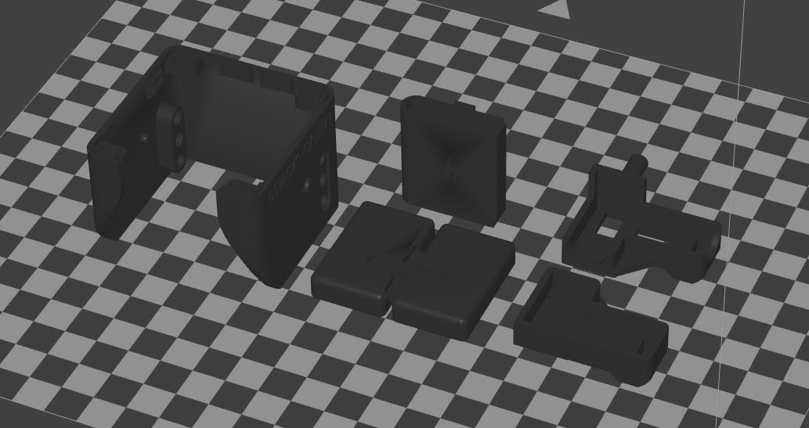
- 没有打印机：嘉立创三维猴 https://3d.jlcpcb.com 传 STL 即可，全套几十元；或淘宝"3D打印代打"。
- STEP 源文件在官方仓库
case/case_SG90/（与本包 STL 同名），想改外形用 Fusion 360 / FreeCAD 打开。
2. 舵机接线
2.1 变体 C1：直插（零 PCB，+¥30 玩起来）
官方固件文档明确给出直插引脚（manifest_local.json 配 driver.type: "pwm"）：
| 主机 | 端口 | pan（水平）引脚 | tilt（垂直）引脚 |
|---|---|---|---|
| M5Stack Core2 | Port.A | GPIO 33 | GPIO 32 |
| M5Stack Core2 | Port.C | GPIO 13 | GPIO 14 |
| M5Stack Core Basic/Gray | Port.C | GPIO 16 | GPIO 17 |
每颗 SG90 三根线：信号（橙）接上表引脚、VCC（红）接 5V、GND（棕）接 GND。舵机吃电流，强烈建议外接 5V（合适线径直接配电，不能用电阻分压供电）并共地，否则 SG90 启动瞬间可能把主机拉掉电。
2.2 变体 C2：官方底板 PWM 模式
用官方 m5-pantilt 底板（pcb/m5-pantilt-v1.0/），制造文件已生成好：Gerber zip + 带 LCSC 号 BOM + 贴片坐标在 pcb/m5-pantilt-v1.0/manufacture/jlcpcb/，下单流程见其 README（2 层 1.6mm，5 片打样约 ¥30）。
PWM 模式跳线（关键）：不装 R13/R14（那是串行模式跳线），按主机型号装 0Ω 跳线：
| 主机 | 装哪两个 |
|---|---|
| Core Basic / Gray（PWM1_C1/PWM2_C1 路径） | R9 + R11 |
| Core2 / CoreS3（PWM1_C2/PWM2_C2 路径） | R10 + R12 |
PWM 版实拍（器件面/排座/跳线位置）：
| 端口 | 开关 |
|---|---|
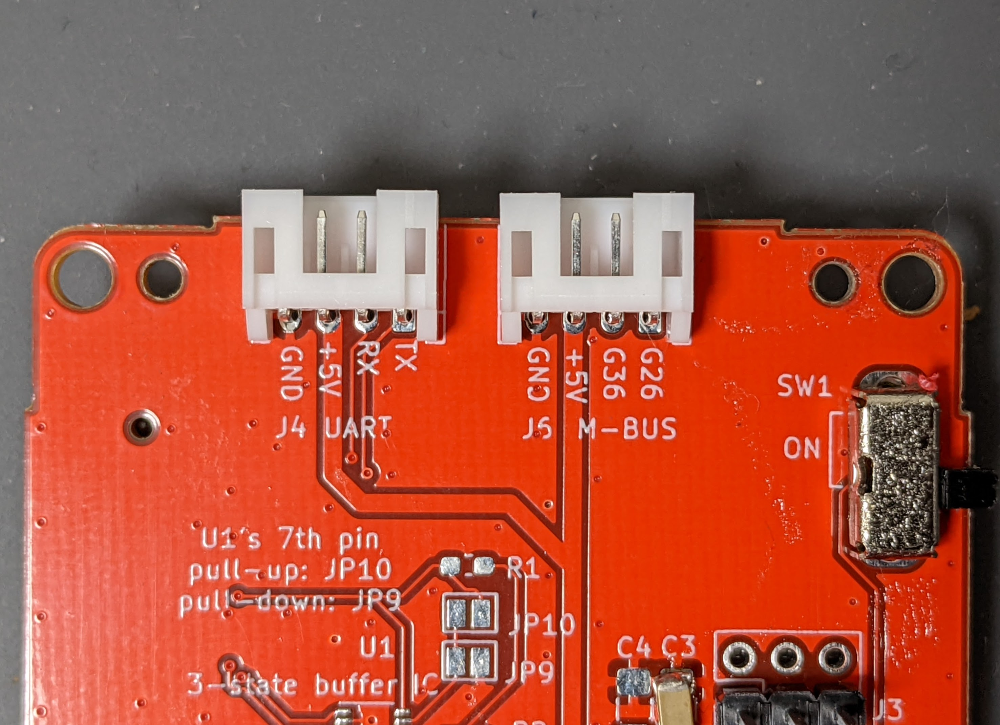 |
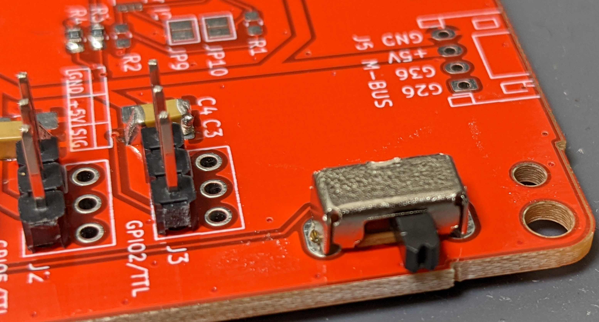 |
| 2x15 排座 | 跳线 | 元件面 |
|---|---|---|
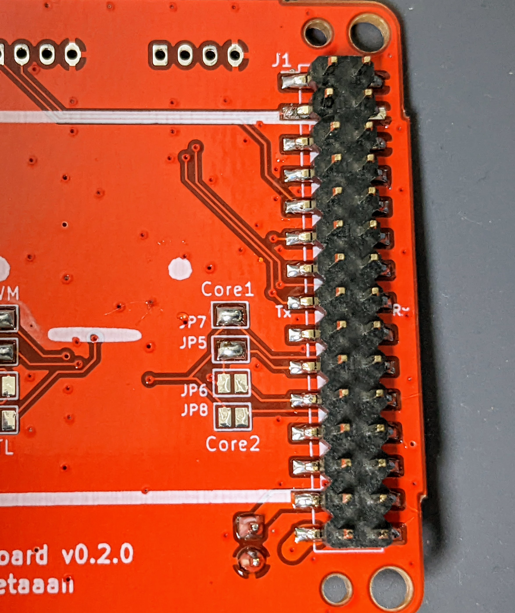 |
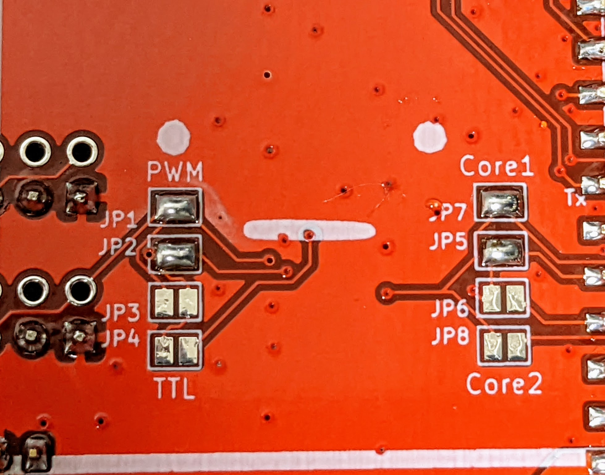 |
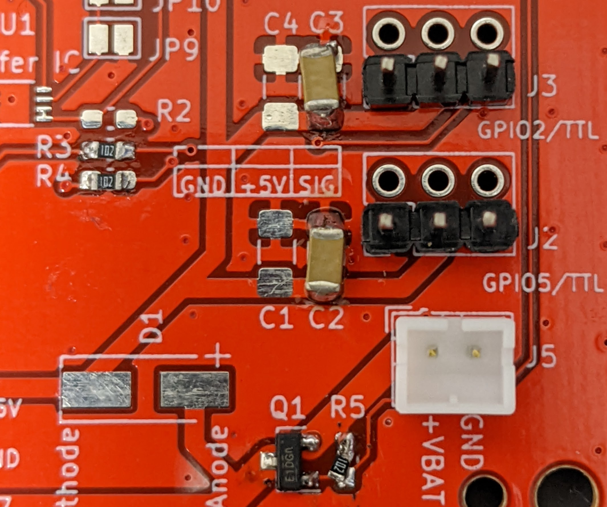 |
舵机 3P 头直接插 J3/J8 舵机口，电池接 J5（PH2.0），主机插 J1 排母（J1 在背面，注意方向）。
2.3 变体：M5GO Bottom 版（mongonta 方案，免自制板）
M5GO Bottom 底座 + SG90，日本 mongonta 的成熟方案，装配图 11 张：
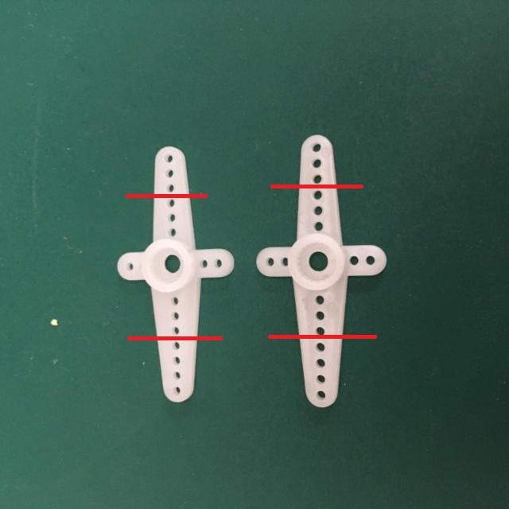
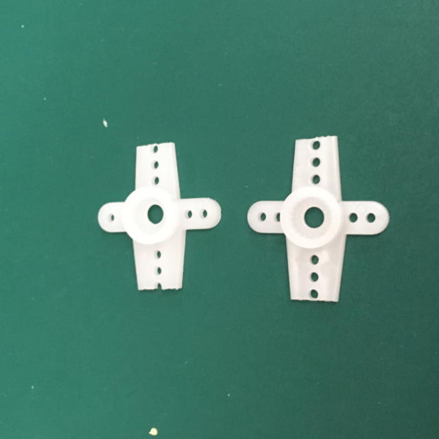
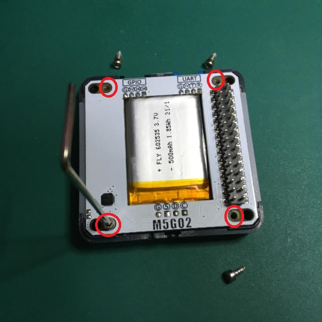
（全套：images/m5go_assembly01.jpg ~ m5go_assembly11.jpg，本目录已存；带猫耳/河马耳/LEGO 孔装饰件。套件代购 https://mongonta.booth.pm/ ）
3. 机械装配（官方动图流程）
三条铁律（官方原文）：
- 先刷固件、舵机方向验证正确，再固定进壳——装反通电就顶壳。
- 摇臂对准参考角 90°（SG90 正前方）再装十字盘。
- 接线理顺、留活动余量，别让线卡住旋转。
官方装配动图：
| 1. 舵机卡进 bracket + 电池入 backpack | 2. feet 与 shell 锁螺丝 | 3. 接底板 + 装 M5Stack |
|---|---|---|
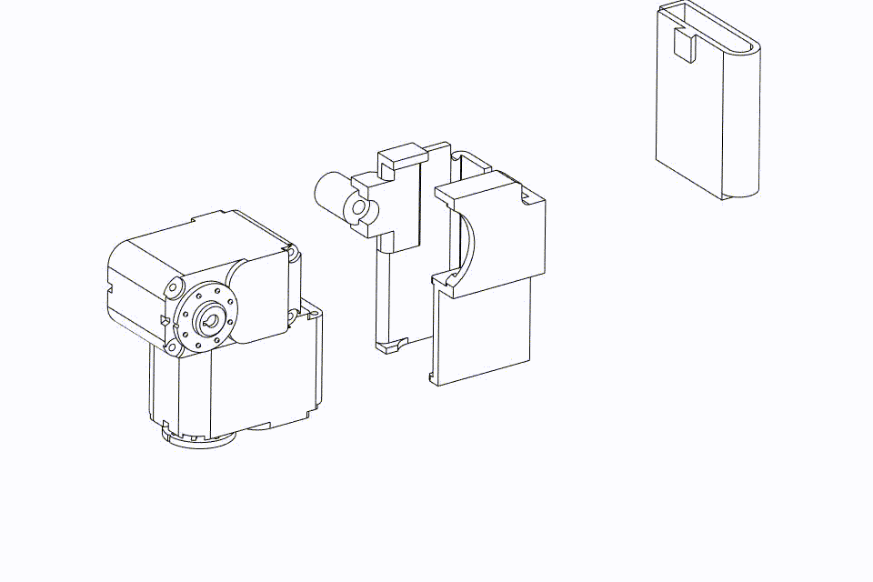 |
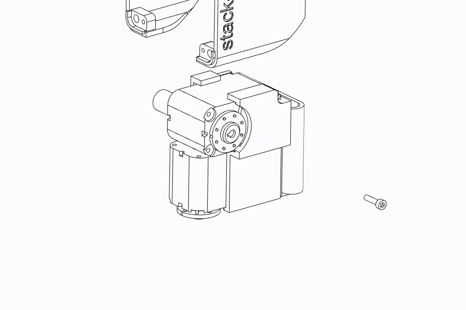 |
 |
文字版：
舵机先不上壳：接好线、刷固件，确认两颗舵机停在中位、方向正确。
对准 90° 参考角装摇臂（十字盘凸起对齐）。
两颗 SG90 卡进 bracket；电池塞进 backpack，卡进 bracket。
feet 和 shell 用 M2×8 各 1 颗固定。
舵机线、电池线接底板（仔细核对插针方向）：

底板 M2×4 ×4 锁到机身，M5Stack 插到 J1 排母上；想锁死主机用底部两孔 M3×15。
4. 固件
4.1 明确选择 PWM，再构建
通用 Core/Core2 目标只预置部分引脚，不保证默认 driver.type 是 pwm。直插和底板也使用不同 GPIO，必须按 自制固件配置表 选择 JSON。
- Core Basic/Gray Port.C 直插：
core-sg90-portc.json（pan16 / tilt17）。 - Core2 Port.A 直插：
core2-sg90-porta.json（pan33 / tilt32）；Port.C 则自行改成 pan13 / tilt14。 - 官方底板：旧 Core 用
core-sg90-board.json（5/2），Core2 用core2-sg90-board.json（19/27）；CoreS3 用cores3-sg90-board.json（7/6），并对应上述跳线。
按 构建及烧录流程，将配置复制为上游 manifest_local.json，明确指定通用主机，烧录该输出。网页/离线只选择主机型号不能替代驱动配置；旧 NVS 的 driver.type 也可能覆盖新配置，需检查设置。
Takao 的 Core2 + SG90 有专用目标（pan19 / tilt27），只适用于接线一致的板：npm run flash:takao_core2_sg90。它不适用于 Port.A 直插。
4.2 小范围验收
先不上摇臂，确认两颗舵机回参考中位，再装摇臂。执行 无按键小范围 MOD；不要要求所有主机都有 A/B/C 三个实体键。检查动作方向、主机复位和机械干涉。SG90 没有位置反馈，不能用软件姿态估计当作实测反馈，也不能靠 setTorque(false) 真正切断其电源。装配时必须断开舵机供电。
5. 常见坑
| 症状 | 原因 | 处理 |
|---|---|---|
| 一动就黑屏重启 | SG90 涌流拉掉主机电源 | 外接 5V 供电 + 共地；或走底板（有电源路径管理） |
| 舵机抖个不停 | PWM 引脚配置错 | 核对 manifest_local 的 pwmPan/pwmTilt |
| 摇臂方向反了 | 没对 90° 参考角 | 重刷固件回中位后重装摇臂，勿硬掰 |
| 摇臂装不进 | 公差问题 | 用锉/刀轻扩孔；别换错件 |
| 堵转发烫 | 机械卡死 | 立即断电——SG90 堵转可能冒烟（官方警告） |
6. 想升级？
- 嫌 SG90 没反馈/不够精致 → 看串行舵机路线：SCS0009 串行路线 或 v1.0 + XL330 路线。
- 底板老规格（v0.2.1 时代图纸）在官方仓库 tag
v0.2.1：https://github.com/stack-chan/stack-chan/tree/v0.2.1/schematics （与 main 分支 v1.0 板不通用，本路线用 main 分支板即可）。 - MOD 玩法/进阶固件文档：见 firmware-docs/。